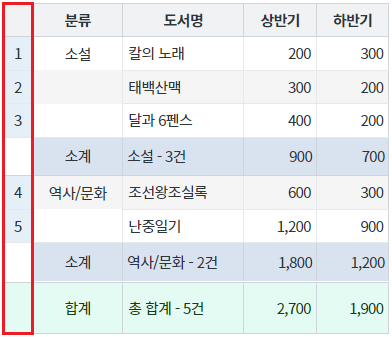
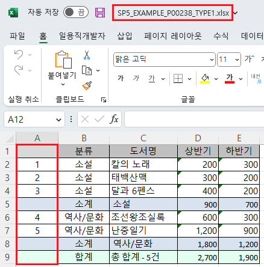
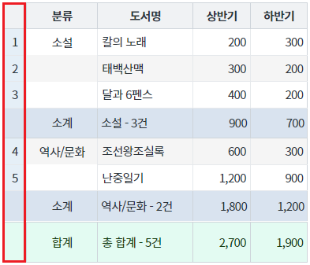
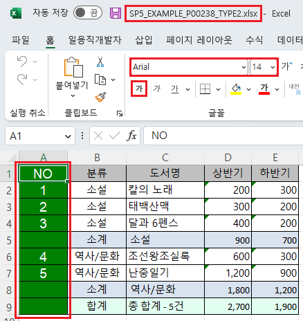

GridView의 엑셀 다운로드(함수 'advancedExcelDownload') 옵션 중 행 번호(rowNum) 영역의 스타일을 적용할 수 있는 옵션 설정의 예제입니다. 스타일을 지정할 수 있는 옵션은 아래와 같습니다. - rowNumHeaderColor : [default: 없음] 행 번호 표시 컬럼의 header 배경색 - rowNumHeaderFontName : [default: 없음] 행 번호 표시 컬럼의 header 폰트 이름 - rowNumHeaderFontSize : [default: 없음] 행 번호 표시 컬럼의 header 폰트 크기 - rowNumHeaderFontColor : [default: 없음] 행 번호 표시 컬럼의 header 폰트 색상 - rowNumBodyColor : [default: 없음] 행 번호 표시 컬럼의 Body 배경색 - rowNumBodyFontName : [default: 없음] 행 번호 표시 컬럼의 Body 폰트 이름 - rowNumBodyFontSize : [default: 없음] 행 번호 표시 컬럼의 Body 폰트 크기 - rowNumBodyFontColor : [default: 없음] 행 번호 표시 컬럼의 Body 폰트 색상 - rowNumFooterColor : [default: 없음] 행 번호 표시 컬럼의 Footer 배경색 - rowNumFooterFontName : [default: 없음] 행 번호 표시 컬럼의 Footer 폰트 이름 - rowNumFooterFontSize : [default: 없음] 행 번호 표시 컬럼의 Footer 폰트 크기 - rowNumFooterFontColor : [default: 없음] 행 번호 표시 컬럼의 Footer 폰트 색상 - rowNumSubTotalColor : [default: 없음] 행 번호 표시 컬럼의 Subtotal 배경색 - rowNumSubTotalFontName : [default: 없음] 행 번호 표시 컬럼의 Subtotal 폰트 이름 - rowNumSubTotalFontSize : [default: 없음] 행 번호 표시 컬럼의 Subtotal 폰트 크기 - rowNumSubTotalFontColor : [default: 없음] 행 번호 표시 컬럼의 Subtotal 폰트 색상
옵션 'useStyle'을 'false'로 지정해야 동작합니다.
엑셀 다운로드 - 기본 동작
엑셀 다운로드 - 행 번호의 스타일 적용
다운로드된 엑셀 파일의 행 번호 영역의 스타일을 비교합니다.
행 번호(rowNum)가 표시되어 있습니다.
[브라우저(Chrome) 실행 예시]

엑셀 파일 "SP5_EXAMPLE_P00238_TYPE1.xlsx"이 다운로드 됩니다.
다운로드 된 엑셀 파일 'SP5_EXAMPLE_P00238_TYPE1.xlsx'을 실행합니다.
행 번호 영역의 스타일을 확인합니다.
(배경색, 글자체, 글자 크기, 글자색, 글자 굵게 적용 여부)
행 번호 영역의 스타일로 적용됩니다.
[다운로드된 엑셀(2021) 파일 예시]

행 번호(rowNum)가 표시되어 있습니다.
[브라우저(Chrome) 실행 예시]

엑셀 파일 "SP5_EXAMPLE_P00238_TYPE2.xlsx"이 다운로드 됩니다.
다운로드 된 엑셀 파일 'SP5_EXAMPLE_P00238_TYPE2.xlsx'을 실행합니다.
행 번호 영역의 스타일을 확인합니다.
- 배경색 : "green"(Khaki)
- 글자체 : "Arial"
- 글자 크기 : "13"
- 글자색 : "white"
- 글자 굵게 적용 : "true"
[다운로드된 엑셀(2021) 파일 예시]

[소스 코드 예시]
//예제 파일의 스크립트 "scwin.btn_ex2_onclick"를 참고하세요. var jsnOptions; jsnOptions = { fileName: "SP5_EXAMPLE_P00238_TYPE2.xlsx", //엑셀의 파일명 useSubTotal : "true", //필수 지정 - subTotal 표시 useStyle : "false", //필수 지정 rowNumVisible : "true", //행 번호(rowNum) 출력 rowNumHeaderValue : "NO", //행 번호의 헤더 문자열 rowNumHeaderColor : "green", //행 번호 헤더 영역 배경색 rowNumHeaderFontName : "Arial", //행 번호 헤더 영역 글자체 rowNumHeaderFontSize : "14", //행 번호 헤더 영역 글자 크기 rowNumHeaderFontColor : "white", //행 번호 헤더 영역 글자색 rowNumBodyColor : "green", //행 번호 바디 영역 배경색 rowNumBodyFontName : "Arial", //행 번호 바디 영역 글자체 rowNumBodyFontSize : "14", //행 번호 바디 영역 글자 크기 rowNumBodyFontColor : "white", //행 번호 바디 영역 글자색 rowNumFooterColor : "green", //행 번호 푸터 영역 배경색 rowNumFooterFontName : "Arial", //행 번호 푸터 영역 글자체 rowNumFooterFontSize : "14", //행 번호 푸터 영역 글자 크기 rowNumFooterFontColor : "white", //행 번호 푸터 영역 글자색 rowNumSubTotalColor : "green", //행 번호 서브토탈 영역 배경색 rowNumSubTotalFontName : "Arial", //행 번호 서브토탈 영역 글자체 rowNumSubTotalFontSize : "14", //행 번호 서브토탈 영역 글자 크기 rowNumSubTotalFontColor : "white" //행 번호 서브토탈 영역 글자색 }; //GridView "grd_exam1"의 엑셀 다운로드 실행 grd_exam1.advancedExcelDownload(jsnOptions);
options.useSubTotal
options.useStyle
options.rowNumVisible
options.rowNumHeaderValue
options.rowNumHeaderColor
options.rowNumHeaderFontName
options.rowNumHeaderFontSize
options.rowNumHeaderFontColor
options.rowNumBodyColor
options.rowNumBodyFontName
options.rowNumBodyFontSize
options.rowNumBodyFontColor
options.rowNumFooterColor
options.rowNumFooterFontName
options.rowNumFooterFontSize
options.rowNumFooterFontColor
options.rowNumSubTotalColor
options.rowNumSubTotalFontName
options.rowNumSubTotalFontSize
options.rowNumSubTotalFontColor
[웹스퀘어5 SP5 개발 가이드] GridView
링크 : https://docs1.inswave.com/sp5_user_guide/bc10c1b82c9a2a0b#e1c4658baf7e726f
[웹스퀘어5 SP5 개발 가이드] GridView → Excel 다운로드
링크 : https://docs1.inswave.com/sp5_user_guide/bc10c1b82c9a2a0b#9fb910628c27d550
[웹스퀘어5 SP5 개발 가이드] Excel 파일 스타일 설정
링크 : https://docs1.inswave.com/sp5_user_guide/bc10c1b82c9a2a0b#7a3bda36f7d0b2e6